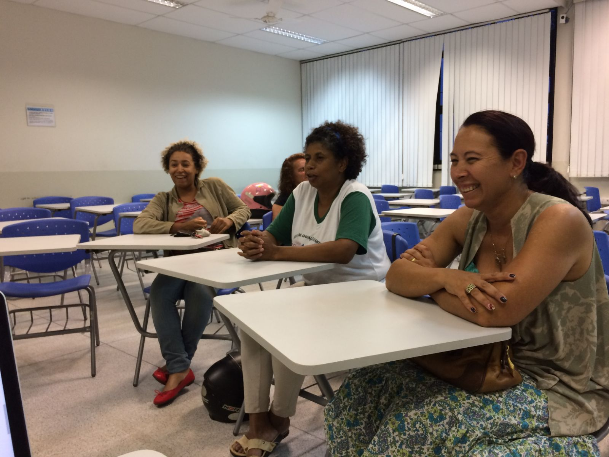
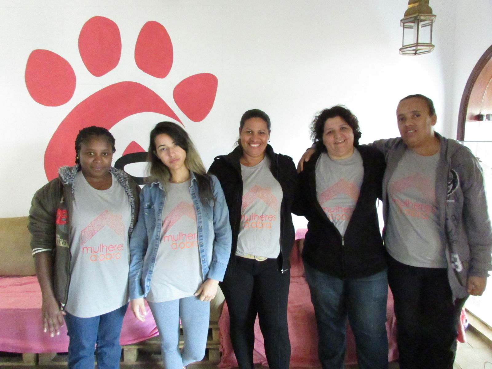
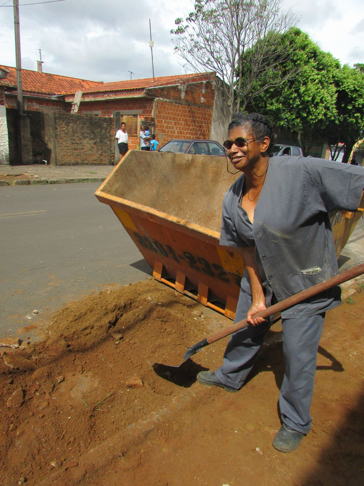

Mulheres à Obra
Mulheres na construção civil, com trabalho digno, capacitado e de qualidade.

- Área
- Construção civil
- Modelo
- Cooperativa ou associação
- Parceiros
- Rotaract e Cardinali
- Encerramento
- 2018
O projeto
Igualdade de gênero onde as mulheres são minoria.
Empoderar uma mulher engloba tudo o que pode fortalecer as mulheres e desenvolver a igualdade de gênero onde elas são minoria. Inspirado no curso Mulheres Construindo Autonomia, da Prefeitura de São Carlos, o time criou um projeto para inserir mulheres no mercado da construção civil, com livre competição no mercado através de um trabalho em grupo.

Nosso papel
Uma cooperativa com padrão de qualidade.
O papel da Enactus foi auxiliar na criação de uma cooperativa ou associação, unificando e capacitando mulheres empreendedoras para uma inserção ativa e independente no mercado. Para garantir a qualidade, oferecemos orçamento e trabalho uniformes, bom atendimento e treinamentos.
Treinamentos realizados: precificação (2), marcenaria, segurança no trabalho, válvula hidra, elétrica, hidráulica e atendimento ao cliente.

Parcerias e encerramento
Um projeto que segue inspirando.
Com o Rotaract, oferecemos às mulheres são-carlenses um curso de pequenos reparos residenciais ministrado pelas mulheres do projeto. Com a Cardinali, ajudamos a finalizar a obra da nova sede da empresa, crucial para a inserção das mulheres no mercado.
O projeto foi encerrado em meados de 2018. Mesmo sem ter sido entregue plenamente como planejado, segue inspirando o nosso time e toda uma rede de pessoas que reconhece a importância do empoderamento feminino.

Esse projeto terminou. O impacto continua.
Conheça os projetos ativos do time e veja como acompanhar ou apoiar o que estamos construindo agora.